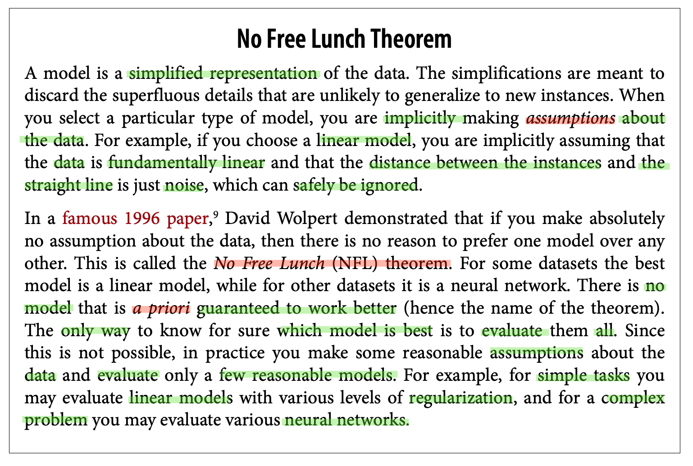

1 Machine Learning Landscape
- What is Machine Learning (ML)? Comparing ML Approach versus Traditional one?
- Applications of ML? Tasks that ML especially useful for?
- Present Types of ML System according to:
- Training Supervision: Supervised Learning, Unsupervised Learning, Reinforcement Learning, etc.
- Batch Learning versus Online Learning
- Instance-based versus Model-based
- Main Challenges of ML?
- The ML Project Workflow?
1.1 What is Machine Learning
“Machine learning is the field of study that gives computers the ability to learn without being explicitly programmed.” — Arthur Samuel, 1959
Traditional Approach
If you have a task using data to make a prediction (e.g. classification), with traditional approach you have to come up with a bunch of if-else clauses to handle it.
For example, to write a spam email filter program, you have to know some words or phrases that usually appear in a spam email, then your program would flag emails as spam if a number of these patterns were detected. Finally, you would test your program until it was good enough to launch.
But how is it if the spammers notice the rules that we set?
They will adjust these patterns a little bit that our program cannot detect, and if they keep working around our spam filter, we will need to keep writing new rules that gradually become a very long complex list. This is where the ML approach comes into play.
The Machine Learning Approach
As Arthur Samuel said, the ML system can learn patterns from the data without being explicitly programmed.
In this case, a spam filter based on ML techniques automatically notices unusually frequent patterns in spam flagged by users, and it starts flagging them without our intervention.
1.2 Applications of Machine Learning
Common tasks
- Regression: Forecast revenue, weather, impact of certificate scores on admission, financial and logistical forecasting
- Classification: Anomaly detection
- Clustering: Segmenting clients
Natural Language Processing
Text classification (topic modeling, flagging offensive comments), text summarization, questions-answering modules (chatbot), speech recognition
Computer vision
Image classification, semantic image segmentation, face recognition, image captioning
Recommendation system
Web search, product recommendations, home page layout
Robotics
Handling objects, decision-making
Medicine
Finding anomalies in radiology images, measuring features in ultrasounds
Biology
Classifying cell/proteins, tumor-normal sequencing and classifying
Playing games
Chess, Go, most Atari video games, and many real-time strategy games
To summarize, machine learning is especially great for:
- Problems for which existing solutions are complex and/or require a lot of work
- Fluctuating environments, hard/retrain to keep up to date
- Getting insights about complex problems and large amounts of data
1.3 Types of Machine Learning System
Machine Learning Systems are divided into 3 common types based on:
- Training supervision:
supervised learning,unsupervised learning,reinforcement learning
- Learn on the fly or not:
online learningversusbatch learning
- Learn by heart or detect patterns:
instance-based learningversusmodel-based learning
1.3.1 Training Supervision
How they supervised: supervised, unsupervised, semi-supervised, self-supervised, etc.
Supervised: Classification and RegressionUnsupervised: Clustering, Dimensionality Reduction, Association Rule LearningSemi-supervised: Partially labeledSelf-supervised: Unlabeled -> Fully labeled. Learn to generate labels. Unlike unsupervised learning, self-supervised focuses on classification and regression, although it learns from fully unlabeled dataReinforcement Learning: Optimize rewards -> Find best strategy (called policy) itself
1.3.2 Learn on the fly
Whether or not they can learn incrementally
Batch Learning (also called Offline Learning)
- Learn offline using all available data, apply what it has learned without learning more.
- Useful for areas that do not change too much => Model’s performance will not decay fast
- Not useful for fast-evolving system (ie. financial market) => Model’s performance will decay rellay fast => Have to train new model
Online Learning (also called Incremental Learning)
- Run and learn simultanously by feeding new data sequentially called mini-batches
- Suitable for rapidly changed system, limited computing resources.
- Important parameter: learning rate
- Challenges: bad data => decline performance quickly => Solutions: monitor system (switch learning off, anomaly detection)
1.3.3 Instance-Based Versus Model-Based Learning
Compare new data to known data/Detect patterns in data
Instance-based Learning
- Learn by heart, then generalize new data using a similarity measure (e.g. k-Nearest Neighbors Regression)
Model-based Learning
- Feed data as examples to model => Able to make predictions (e.g. Linear Regression)
- Minimize cost function => Find best parameters
1.4 Challenges of Machine Learning
1.4.1 Insufficient Quantity of Data
Consider the amount of data whether it’s sufficient or not rather than abandon the algorithm
1.4.2 Non-representative Training Data
The training data must be representative of the new cases you want to generalize to
- If data is too small:
sampling noise - If large data but flawed sampling method:
sampling bias
1.4.3 Poor-quality Data
- Errors, Outliers, Noises, etc. => Model perform badly
- Solutions:
- Remove outliers/Fix errors
- Instances have missing features =>
- Ignore Instances
- Ignore Features
- Fill in Missing Values
- Train model with/without features
1.4.4 Irrelevant Features
Feature Engineering:
- Feature Selection: Select most useful features
- Feature Extraction: Combine existing features to produce a more useful one
- Create new feature: from exist data/gather new data
1.4.5 Overfitting the Training Data
Model tends to remember data => Perform well on Training Data, but generalize badly (e.g. Fit noisy/too small data to complex models (NNs))
Solutions:
- Choose simpler models (less parameters)
- Contrain models (regularization)
- Gather more data
- Reduct noise data
1.4.6 Underfitting the Training Data
Model is too simple to learn underlying structure of data
Solutions:
- Choose more powerful model (more parameters)
- Reduce the model’s contraints,
- Feature engineering
1.4.7 Summarise
Machine learning is about making machines get better at some task by learning from data, instead of having to explicitly code rules.
There are many different types of ML systems: supervised or not, batch or online, instance-based or model-based.
In an ML project you gather data in a training set, and you feed the training set to a learning algorithm. If the algorithm is model-based, it tunes some parameters to fit the model to the training set (i.e., to make good predictions on the training set itself), and then hopefully it will be able to make good predictions on new cases as well. If the algorithm is instance-based, it just learns the examples by heart and generalizes to new instances by using a similarity measure to compare them to the learned instances.
The system will not perform well if your training set is too small, or if the data is not representative, is noisy, or is polluted with irrelevant features (garbage in, garbage out). Lastly, your model needs to be neither too simple (in which case it will underfit) nor too complex (in which case it will overfit).
1.5 Testing and Validating
- train/val/test split
- Error rate on new cases:
generalization error(also calledout-of-sample error) cross-validation:- using many small validation sets (n).
- Train models n times with (n-1) validation sets => Test with the rest set.
- Average results => much more accurate measure.
- Drawback: the training time is multiplied by the number of validation sets
1.5.1 Data Mismatch
1.5.2 No Free Lunch Theorem

1.6 The Machine Learning Workflow
- Frame the problem and look at the big picture.
- Get the data.
- Explore the data to gain insights.
- Prepare the data to better expose the underlying data patterns to machine learn‐ ing algorithms.
- Explore many different models and shortlist the best ones.
- Fine-tune your models and combine them into a great solution.
- Present your solution.
- Launch, monitor, and maintain your system.
Go to Chapter 2 for details of each step